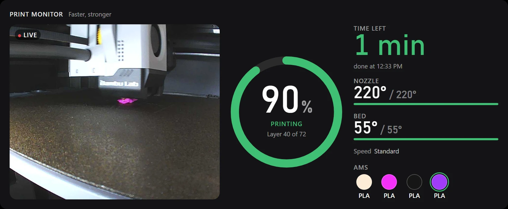
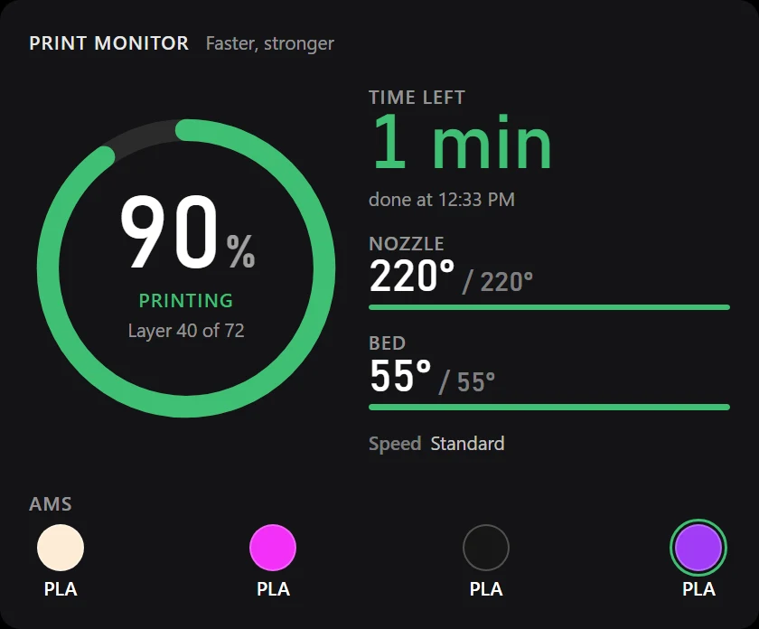

Print Monitor
iCUE widget In development
Your Bambu Lab printer on the Edge: live camera, progress, time left, temperatures and AMS filament.


What it does
- The printer camera, live. Tap it to fill the widget.
- Progress ring with the layer count, and the time left with the clock time it finishes.
- Nozzle and bed temperatures against their targets; amber while heating.
- Every AMS slot with its colour, type and how much is left; the loaded one ringed.
- Speed mode, part fan and chamber light at a glance.
- Read-only and local: it talks to the printer on your network, never through the cloud, and never sends it a command.
Set it up
- On the printer's screen, open Settings, WLAN and note its IP address and LAN access code.
- Find the printer's serial number in Bambu Studio under Device, or on the label on the back of the printer.
- Open %LOCALAPPDATA%\ModShop\printer.json on your PC (it appears after the widget first runs) and fill in those three values. They never leave your PC.
- Open the widgets section and press the plus button.
- Pick the .icuewidget file you downloaded, or install it straight from Elgato Marketplace inside iCUE once it is listed there.
- Drag the widget into a slot. Hold it to open its settings: colours, transparency and what it shows.
Permissions
iCUE asks you to approve these when you install. Here is what each one is for. Everything stays on this PC unless a line says otherwise.
- Local helper app
localhost:13509 - Talks to a small helper app on this PC. It answers only widgets on this PC and never opens anything to the internet. Why: Holds the connection to your printer on your home network (status on port 8883, camera on port 6000) and hands the widget its status and newest camera frame. iCUE widgets cannot open those connections themselves. Swipe between Edge pages even when your finger starts on this widget. iCUE alone only swipes from the gaps between widgets.
- Open links
iCUE URL plugin - Opens a link or an app when you tap. Why: Starts the helper app if it is not running, so the widget fixes itself.
Support development
Free projects stay free. Tips fund new widgets, plugins and updates.
Tip in SOL
73jwsxMDvQMAiGdVpiRuCj6FgmSVHoqQy9bTMmNkMJGH
Tip in ETH
0xCfECCb807ac283D4A949e27a0D687f657d00CfA0
Tip in BTC
bc1q6cyvqz4kpgv4zqeelgq55xnsmjgg6utf0f3aat
Send each coin only to its own address, on its own network. Crypto transfers cannot be reversed.